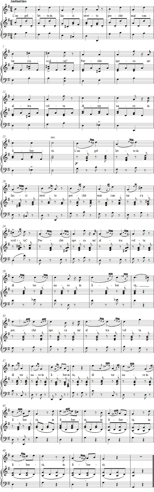

Vaccaj: Exercise 9b
Listen to the recording
Sheet music

Lyrics
Mordente in diversi modi
Mordents
a bird in a snare sing?
Because one day
it hopes to be free again.
Performance instructions
This exercise develops ornamentation skills with the after-grace-note figure. One can probably agree with Paton about the melody of this exercise: it is "extraordinarily simple" and therefore in need of ornamentation. This brings us to the small notes.
The two-note ornament is performed as in the preceding exercise, using thirty-second notes. The three-note after-grace-note figure, in turn, is understood as the final part of four thirty-second notes, with the first note tied to the eighth-note principal note.
Practice suggestions
Unlike Paton, Battaglia finds the theme charming. In syllables 17–19, the ornaments may connect the last note of the bar and its text on the second beat.
The "after-grace-note figure" changes throughout the song as follows:
17–19 turn
20 sliding appoggiatura
21–22 double appoggiatura (rare form)
23 sliding appoggiatura
24 inverted mordent
You can practise the "mordents" in several different styles. Sing the turn in sixteenth notes, lightly accenting the first note. Slide into the appoggiatura in thirty-second notes, lightly accenting the first note. Give the double appoggiatura the same value, allowing it to fall either on the principal note (the old practice) or immediately before it.
The inverted mordent is performed with a strong accent on its first note.
As the song continues, retain the slurs marked by Vaccaj and sing:
25 turn
27 turn
29 turn
31 after-grace-note figure
33 turn
35 turn
37 after-grace-note figure
38 after-grace-note figure
39 after-grace-note figure
41 turn
42 turn
43 turn
45 turn
47 turn
49 turn
51 turn
Sing both the turn and the after-grace-note figure in sixteenth notes.
Broadly speaking, if you try to sing the ornaments within the shortest possible time, the song becomes a mechanical, overloaded example of how not to ornament a simple melody. If, on the other hand, you modify some of the slurs and shorten the thirty-second notes, the exercise remains pleasant throughout and the structure of the underlying melody is preserved.
Ideas for interpretation
To bring out parodic qualities in your interpretation, consider the following suggestions:
Interpret the word liberta positively. This conveys the idea that one fine day the bird will certainly be set free. Reinforce the hopeful mood with the pianist's staccato playing. The tempo should be no slower than a quarter note at M.M. 96. Note Vaccaj's apparent scansion of the eighth-note syllables as trochees. If you wish, experiment with placing the accent on the second note of an ascending interval.
Anyone who tries to carry this through while maintaining the pulse can be assured of a frightening result.
For an alternative interpretation, consider these ideas:
Give the poem a serious atmosphere, knowing that, despite its hopeful song, the bird will never be free. The pianist can contribute to this interpretation by playing with more portamento than staccato. The tempo should be considerably more restrained, no faster than a quarter note at M.M. 72.
Among the possible accents, choose the final first beat of each phrase and direct the phrase towards it. Vaccaj's accent in bar 8 is therefore entirely appropriate.
Forshufvud, G. 1994. Con lieve fiato. Lärarhandledning till Nicola Vaccajs Metodo pratico. Göteborgs universitetet.